Реализуем функции добавления, редактирования и удаления данных.
Реализация функции добавления
1. На странице AddEditPage добавим новое поле, которое будет хранить в себе экземпляр добавляемого автомобиля
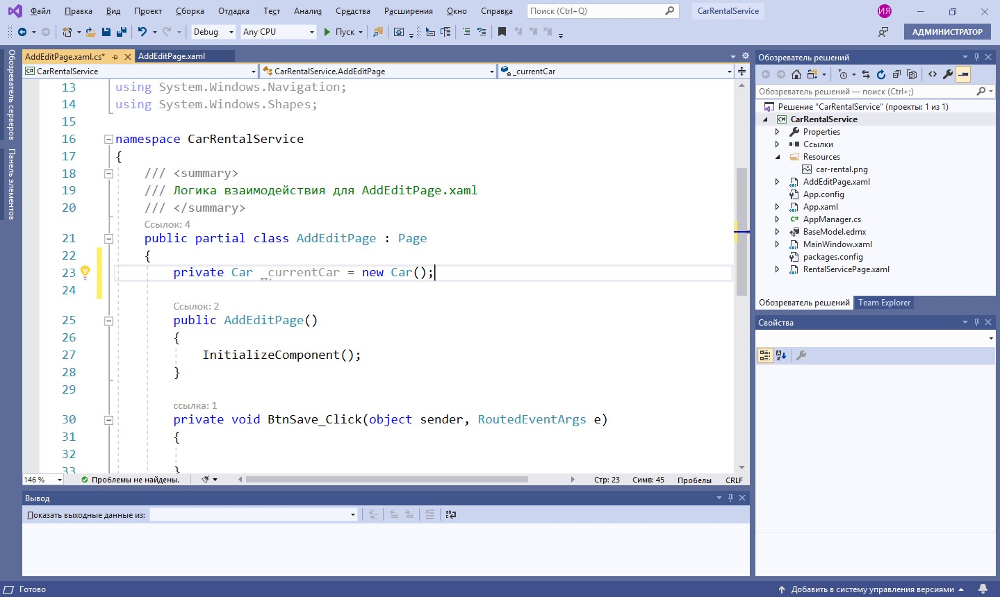
2. При инициализации установим DataContext страницы — этот созданный объект
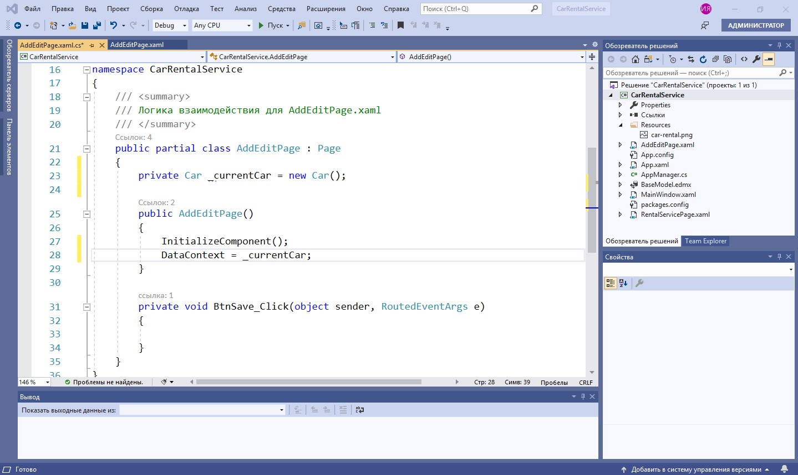
3. Затем, используя привязку данных, укажем, какому свойству обращаться к каждому элементу при загрузке данных. Например, свойство Text у первого TextBox'а будет обращаться к модели автомобиля
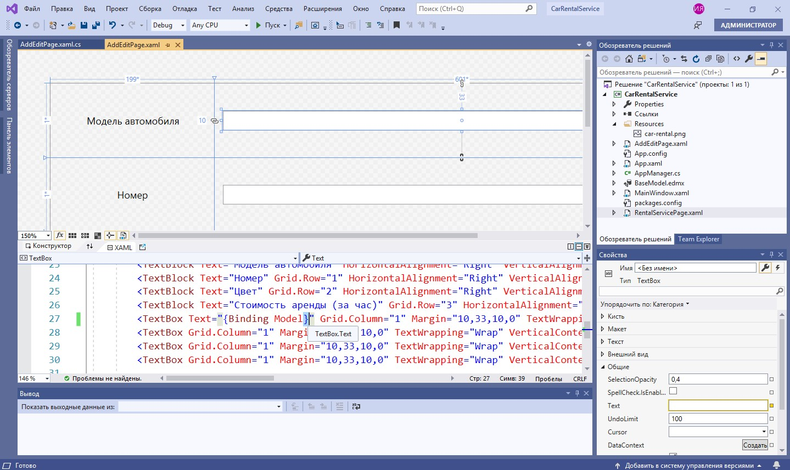
4. Второй элемент будет обращаться к номеру автомобиля, третий к цвету, а четвертый - к стоимости аренды
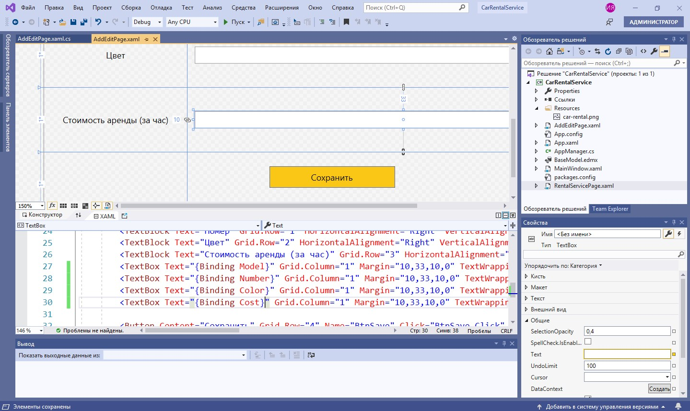
5. Далее обработаем нажатие на кнопку Сохранение и в коде пропишем логику обращения к модели данных и добавления нового экземпляра автомобиля
a) Прежде чем сохранять данные, сделаем проверки на правильную заполняемость объектов
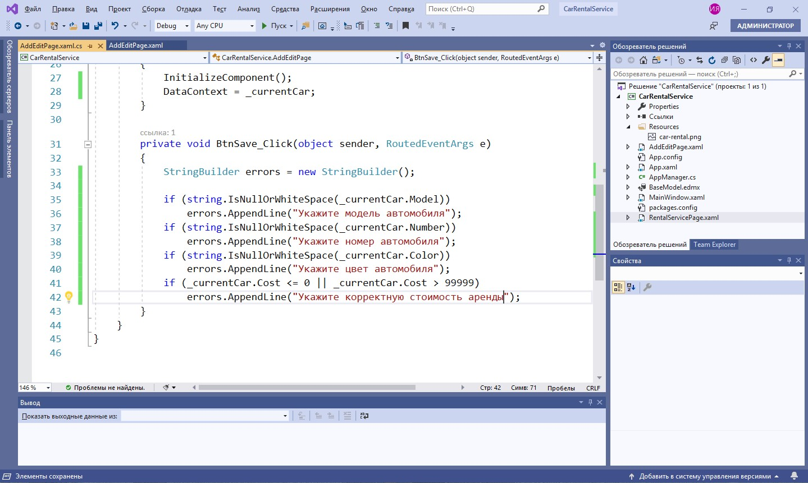
b) После прохождения проверки нужно узнать, возникли ли ошибки, обратившись к переменной errors. Если в переменной что-то есть, то необходимо вывести сообщение об ошибке (то, что накопилось во время проверки). Соответственно, дальнейшее выполнение функции не нужно, и с помощью оператора return — мы выходим
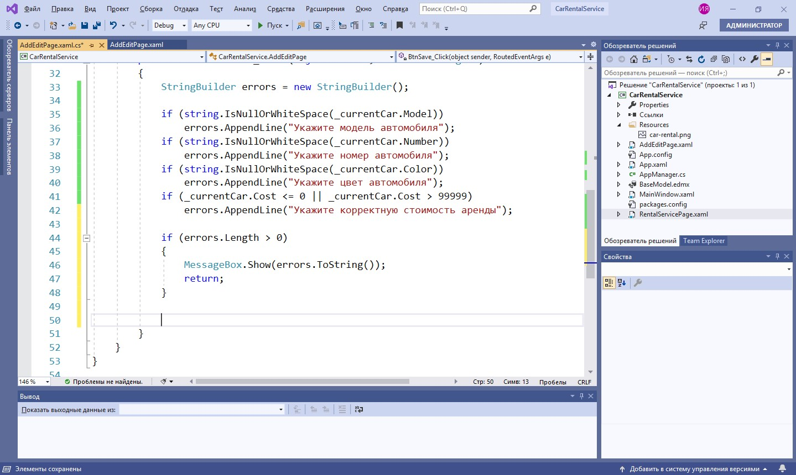
c) Если же все хорошо, и у нас происходит операция добавления (т.е. еще не присвоен код нового автомобиля), то мы будем пытаться добавить модель или экземпляр созданного автомобиля. Получив его контекст и обратившись к таблице автомобилей, с помощью метода Add мы добавляем созданный экземпляр
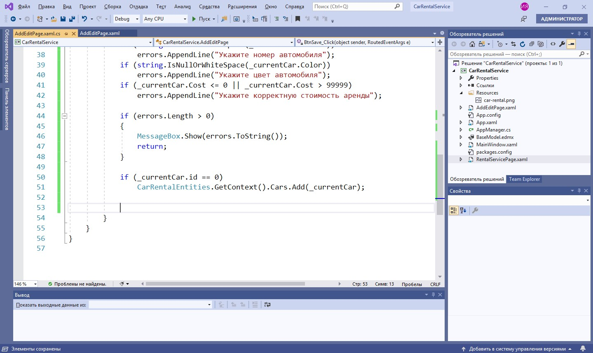
d) Далее напишем код для сохранения изменений, используя метод SaveChanges. Этот метод является коварным, его необходимо поместить в блок try-catch, чтобы он отработал корректно, и в случае возникновения какой-либо непредвиденной ошибки, приложение не «упало», а корректно работало. Мы выведем сообщение об ошибке, если она появилась. В случае успешного сохранения выведем сообщение о том, что информация сохранена.
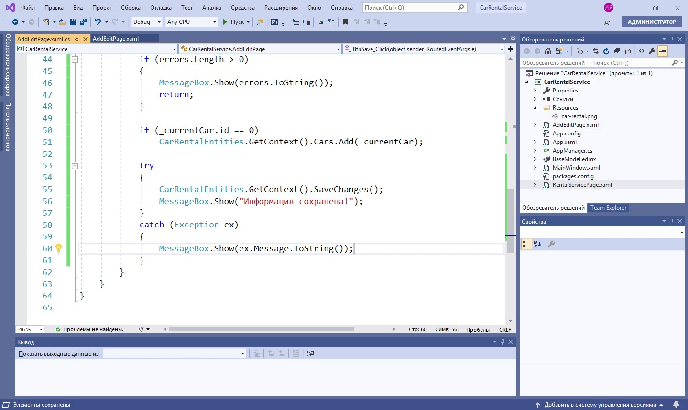
6. Теперь можно вернуться назад. При возврате на страницу со списком автомобилей, нам необходимо выводить актуальную информацию, обновляя список в таблице. Для этого мы будем использовать событие у страницы IsVisibleChange. Оно срабатывает каждый раз, когда страница отображается, либо скрывается
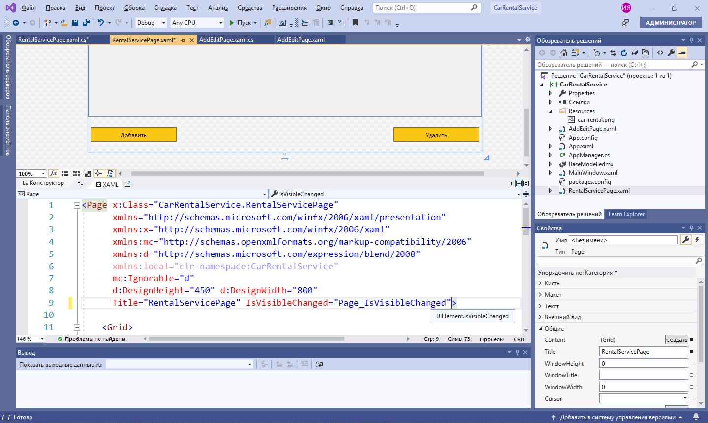
С помощью F12 переходим в код. Если видимость страницы isVisible, мы будем обращаться к контексту с помощью свойства ChangeTracker ко всем сущностям, которые есть. И для каждой из них будем выполнять метод перезагрузки и вывода актуальных данных. После этого таблицу DGridCars присвоим таблице «список автомобилей»
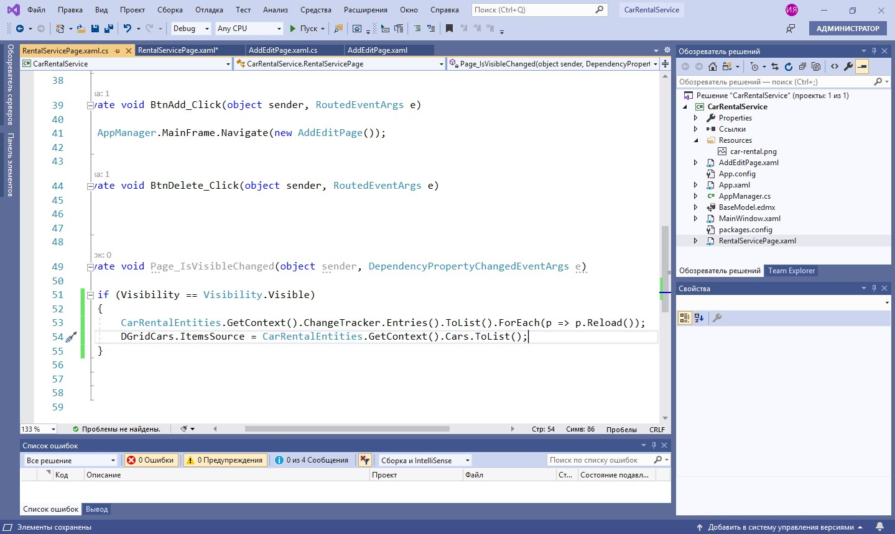
7. Запускаем программу и проверяем функцию добавления данных
Реализация функции редактирования
Для функции редактирования данных целесообразно использовать ту же страницу, что мы делали для добавления. Каким образом это будет происходить? В случае, если пользователь намерен изменить информацию об объекте, система будет отображать страницу добавления с информацией о редактируемом объекте. Измененная информация будет фиксироваться в базе данных и отображаться в списке, как было при добавлении.
В первую очередь добавим параметр нашей странице AddEditPage. В нее мы будем передавать экземпляр выбранного автомобиля и, в случае если он не пустой, присваивать нашему полю CurrentCar. Мы не можем сейчас запустить приложение, т. к. возник ряд ошибок
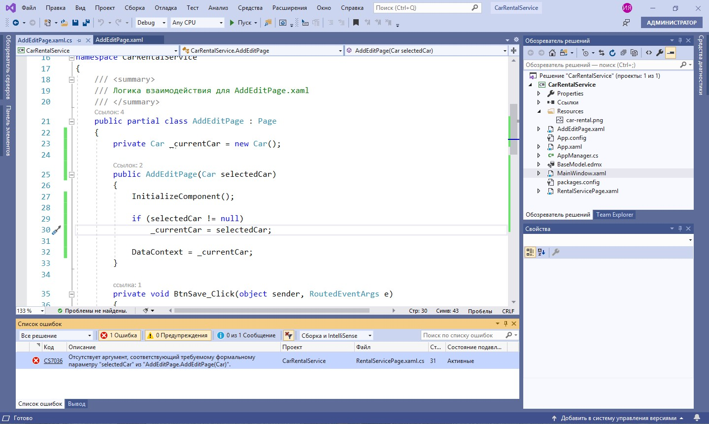
Вызов страницы AddEditPage теперь требует какого-то аргумента. В случае, если мы будем делать добавление, мы просто пропишем null (отправим пустой экземпляр). При этом для редактирования BtnEdit мы уже будем передавать экземпляр, прописав для этого код. Вместо null будем обращаться к кнопке, на которую нажали, получать ее контекст и знать, что это — автомобиль
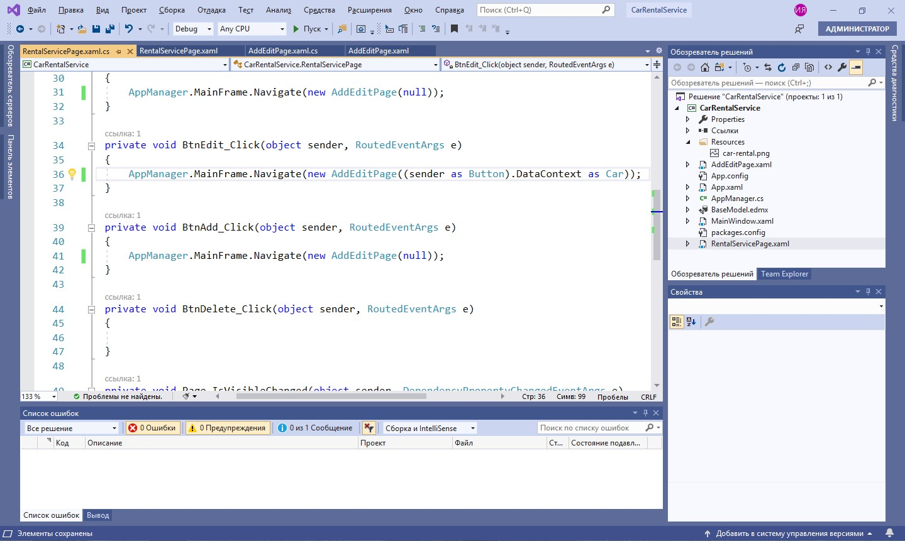
Попробуем теперь посмотреть, что получилось
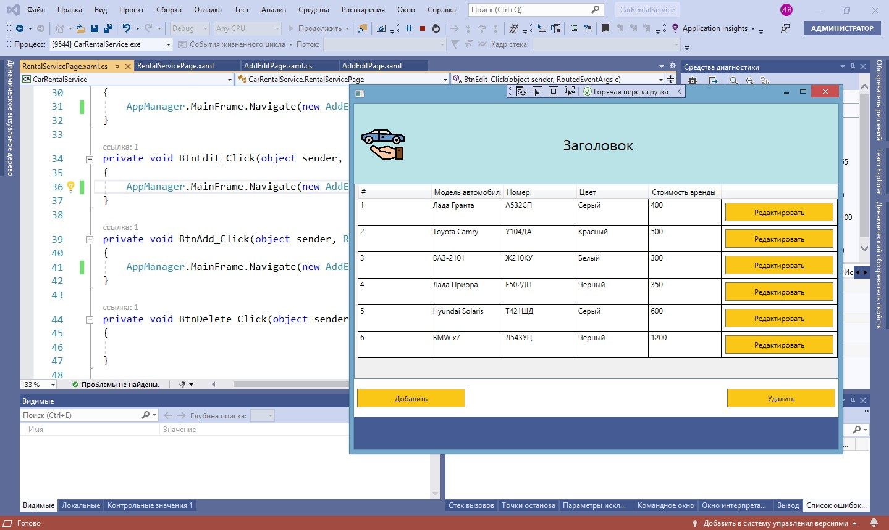
Те данные, которые мы хотим отредактировать, автоматически привязались к этим элементам управления и отображаются корректно. В случае, если мы отредактируем какое-то поле — нажимаем на кнопку Сохранить. Информация будет обновлена
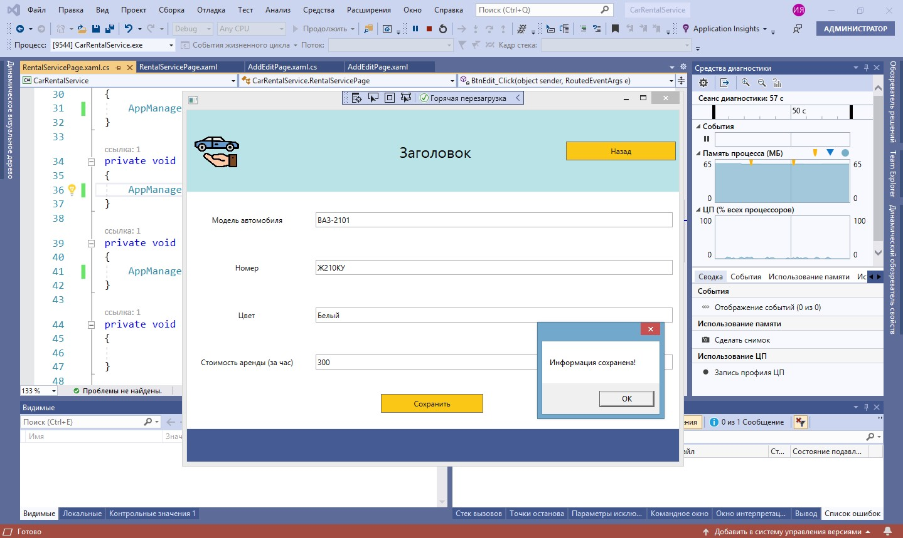
Реализация функции удаления
Для реализации функции удаления отдельное окно не потребуется. Это значительно сократит время на разработку, но удаление требует к себе особого внимания. Любые действия, безвозвратно изменяющие данные в базе данных, должны запрашивать подтверждение пользователя. Именно поэтому, в первую очередь, для нажатия на кнопку удаления мы реализуем сообщение с вопросом: действительно ли пользователь хочет это сделать.
Итак, получаем список автомобилей для удаления, обратившись к таблице с автомобилями. Выбираем все элементы, которые мы выделили, преобразуем их в список автомобилей. И затем, в сообщении, будем спрашивать пользователя: «Вы точно хотите удалить следующие carsForRemoving.Count() элементов?». Укажем здесь заголовок сообщения — «Внимание», затем укажем, какие кнопки доступны при диалоге с пользователем: «Да» или «Нет», и выберем изображение — «Question»
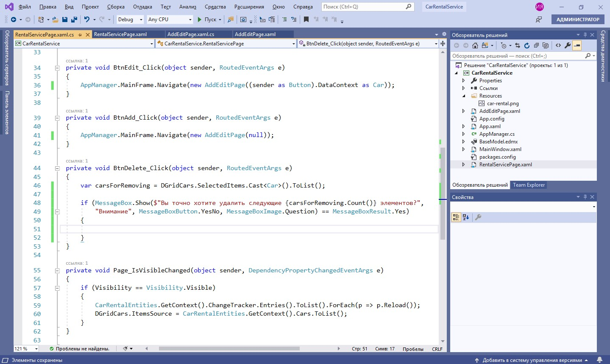
Если результатом диалога от пользователя было нажатие на кнопку «yes», то мы будем выполнять удаление. Для этого обратимся к модели данных, используя блок TryCatch. Получив контекст, попробуем с помощью метода RemoveRange удалить все полученные выделенные автомобили. В случае, если все будет хорошо, отобразим сообщение. Иначе, выводим сообщение об ошибке. Также, в случае, если удаление произойдет успешно, отдельно вызовем обновление актуальных данных
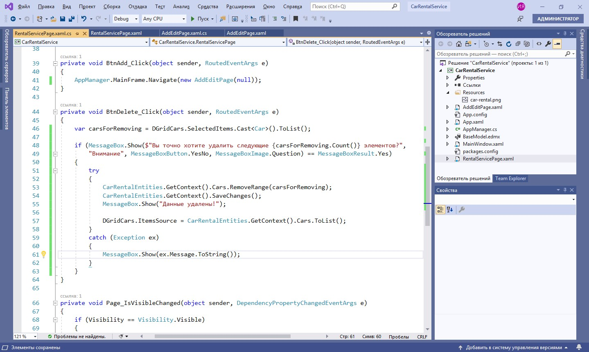
Сохраним и проверим работу приложения. Выделим два автомобиля

Нажмем удалить — точно хотим удалить следующие 2 элемента
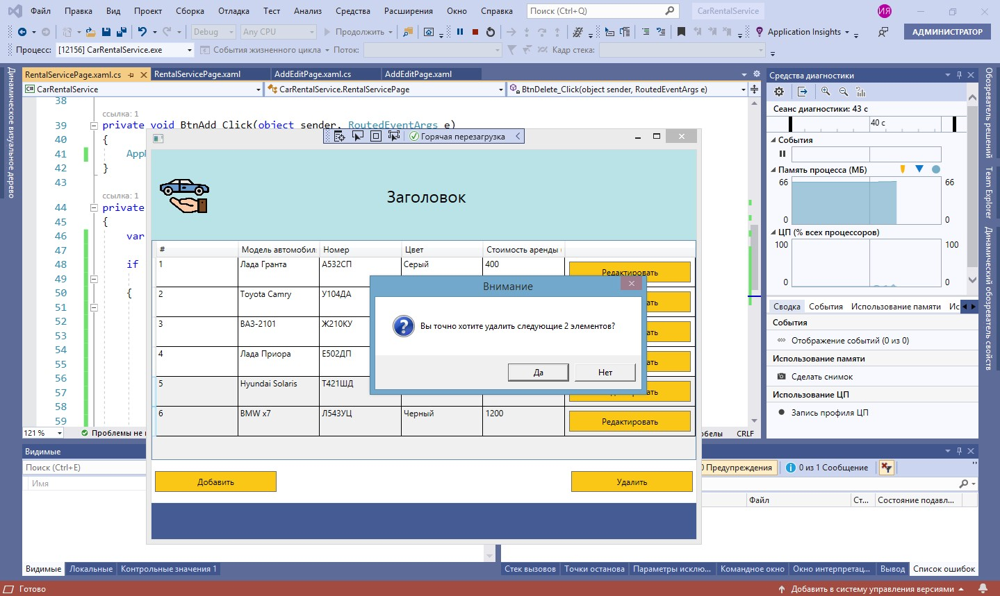
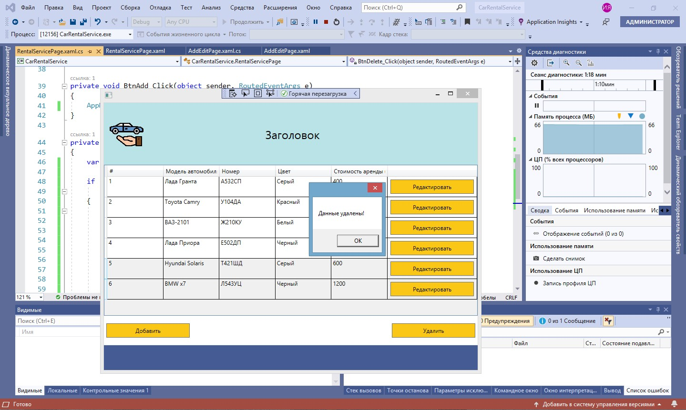
Информация обновилась — данные были удалены
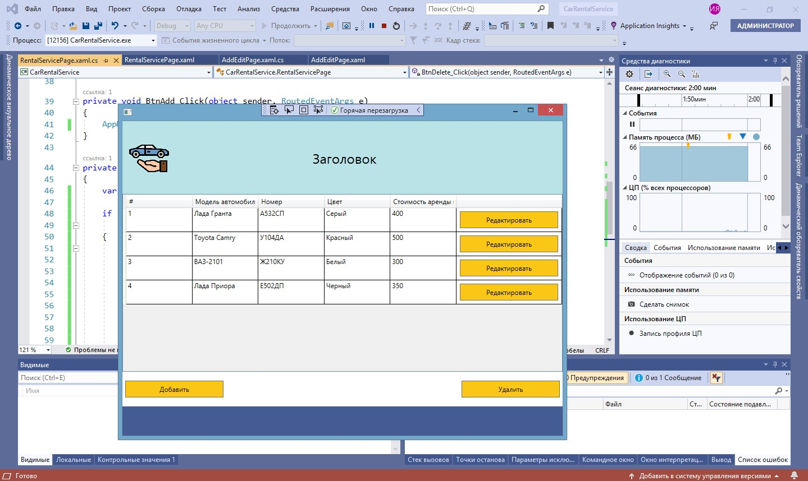
Итоги
Мы оформили вывод данных, реализовали функции добавления, редактирования и удаления данных. Это основной функционал при работе с данными, который пригодится вам при разработке любого программного решения.